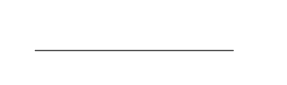
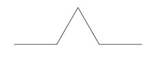
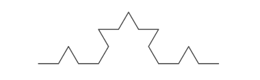
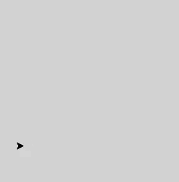

Applications de la récursivité : Dessiner des fractales avec turtle
Commençons par créer un fichier fractales.py qui nous servira pour la totalité des exercices.
Présentation de turtle
Le module turtle
Le module turtle est un module faisant partie de toute distribution python.
Son intérêt repose sur la simplicité (relative) des commandes utilisées pour dessiner.
Un objet de classe
Turtle=} se comporte comme un crayon de table traçante
sur une feuille de papier munie d'un repère orthonormé.

Exemple : première fenêtre et première tortue
Considérons le code suivant , ainsi que le résultat de son exécution :
1 2 3 4 5 6 7 8 9 10 11 | |
- en ligne 1 on importe le module
turtlecomplètement ; - en ligne 4, on crée un objet
Screen()sur lequel la tortue dessinera, cet objet étant affecté au nomscreen; - en ligne 5, on fait appel à la méthode
bgcolordes objetsScreenafin de basculer la couleur de fond surlightgray; - en ligne 6, on crée un objet
Turtleaffecté au nomdonatello.
Par défaut, la tortue apparaît au centre du repère, c'est-à-dire au centre de la fenêtre de dessin, donc aux coordonnées \((0; 0)\).
Nous allons maintenant rajouter au code les instructions suivantes en lignes 7 à 11, puis exécuter le code :
7 8 9 10 11 | |
- la tortue avance de 100 pixels dans la direction où elle pointe ;
- elle tourne vers sa gauche de 90° ;
- elle avance de 50 pixels dans la nouvelle direction ;
- elle tourne vers sa droite de 45° ;
- et enfin elle recule de 80 pixels.
Méthodes de la classe Turtle
Comme toujours, la doc python est très claire sur le module turtle,
mais voici quelques méthodes des objets de classe Turle :
forward(d): déplace l'objetTurtlede \(d\) pixels dans la direction où pointe la tête de la tortue. A mettre en parallèle avec la méthodebackward(d).left(a): tourne la tête de la tortue vers sa gauche de \(a\)°. A mettre en parallèle avec la méthoderight(a).goto(x,y)ousetx(v)ousety(v): déplace la tortue vers une position donnée dans le repère.setheading(a): tourne la tête de la tortue à un angle de \(a\)° par rapport à l'horizontale, dans le sens trigonométrique.circle(r): trace à partir de la position courante un cercle de rayon \(r\), le centre étant situé sur la gauche de la tête de la tortue.speed(v): change la vitesse de déplacement de la tortue. L'argument est un entier de 0 à 10 tel que :- « le plus rapide » : 0
- « rapide » : 10
- « vitesse normale » : 6
- « lent » : 3
- « le plus lent » : 1
pendown()etpenup(): respectivement baisse ou lève le crayon. Si le crayon est levé, rien n'est tracé à l'écran.pensize(t): règle l'épaisseur de tracé à \(t\) pixels.pencolor(*args): règle la couleur du stylo. L'argument peut-être :- une chaîne de caractères :
red,gray, ou#33cc8c, etc... - un triplet RGB :
(255, 100, 50),...
- une chaîne de caractères :
fillcolor(*args): définit la couleur de remplissage.begin_fill()etend_fill(): début et fin de la définition d'une zone de remplissage.
Je ne détaillerai pas ici les méthodes des objets Screen.
Prise en main de turtle
- Créer une fonction
triangleEquilateral(c)qui trace un triangle équilatéral de longueur \(c\) à partir de la position courante. - Créer une fonction
pentagramme(c, color="red")qui trace un pentagramme (une étoile à 5 branches) et le remplit avec la couleur passée en argument. - Créer une fonction
hexagone(c, diag = False)qui trace un hexagone de côté \(c\) et qui trace en outre ses diagonales si le paramètre optionneldiagest passé àTrue.
Toutes les solutions suivantes supposent qu'un écran et qu'une tortue nommée t existent dans l'espace de nom général.
def triangleEquilateral(c) :
for _ in range(3):
t.forward(c)
t.left(120)
def pentagramme(t, c, color="red") :
t.fillcolor(color)
t.begin_fill()
for _ in range(5):
t.forward(c)
t.right(144)
t.end_fill()
def hexagone(t, c, diag = False) :
for _ in range(6):
t.forward(c)
t.right(60)
if diag :
for _ in range(3) :
t.right(60)
t.forward(2*c)
t.right(120)
t.forward(c)
t.right(60)
Flocon de Von Koch
Le Flocon de Von Koch
Le flocon de Von Koch, inventée en 1904 par le mathématicien suédois Helge von Koch, est une des premières courbes fractales décrites, avant même l'invention du terme fractale par Benoit Mandelbrot en 1967.

Cette courbe est obtenue par la décomposition récursive d'un segment en une ligne brisée :


Construction du flocon
- Avant de passer à une définition récursive de la construction, essayons de faire une étape de cette construction.
a. Créer une fonction segment(long) qui trace une itération de la construction du segment de Von Koch (c'est-à-dire traçant l'étape 3 de l'image ci-dessus.).
b. Tester cette fonction en plaçant la tortue dans différentes positions de départ.
def segment(long) :
t.forward(long//3)
t.left(60)
t.forward(long//3)
t.right(120)
t.forward(long//3)
t.left(60)
t.forward(long//3)
- Passons à la construction récursive d'un segment :
En se basant sur la fonction précédente, implémenter une fonction segmentR(long, n) qui tracera
le résultat de \(n\) itérations de la méthode sur un segment de longueur long.
- Pour \(n=0\), on obtiendra

- Pour \(n=1\), on obtiendra

- Pour \(n=2\), on obtiendra

def segmentR( long, n) :
if n == 0 :
t.forward(long)
else :
segmentR(long/3, n-1)
t.left(60)
segmentR(long/3, n-1)
t.right(120)
segmentR(long/3, n-1)
t.left(60)
segmentR(long/3, n-1)
-
Terminer la construction en traçant le flocon sur une base de triangle équilatéral.
Solution
Avec changement de couleurs :
oùdef floconVK(long,n) : t.pencolor(random.choice(couleurs)) t.begin_fill() for _ in range(3) : segmentR(long, n) t.right(120) t.end_fill()couleurs=["black","white","grey","red","orange","green", "blue","navy","yellow","gold","tan","brown", "sienna","wheat","cyan","pink","salmon","violet","purple"]
Le triangle de Sierpinski
Triangle de Sierpinski
Le Triangle (ou napperon) de Sierpinski, aussi connu sous le nom de joint de culasse (nom donné par Mandelbrot), est une autre figure fractale décrite au début du XXème siècle.
Il peut s'obtenir à partir d'un triangle « plein », par une infinité de répétitions consistant à diviser par deux la taille du triangle puis à les accoler en trois exemplaires par leurs sommets pour former un nouveau triangle.

À chaque répétition le triangle est donc de même taille, mais « de moins en moins plein ».A coder
En partant du principe de l'exercice sur le flocon de Von Koch, implémenter une fonction Sierpinski(long, n) qui trace
le résultat de \(n\) itérations sur un triangle de côté \(n\).
Solution
A venir !
Remarque
Le triangle de Sierpinski correspond à une propriété particulière du triangle de Pascal. En effet, le triangle de Sierpinski apparaît dans le triangle de Pascal lorsque'on supprime tous les coefficients pairs. Vous pouvez en voir plus ici